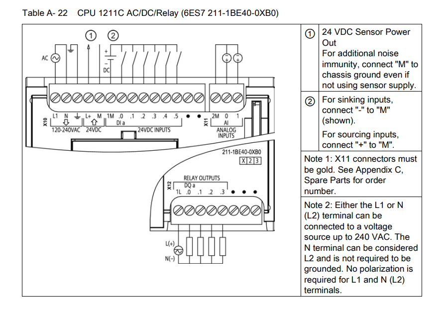

Programirljivi logični krmilniki (VS-PAP-2)
PLKP
Vaja 3: Sekvečno vezje PLK
This page is part of the content downloaded from Vaja 3: Sekvečno vezje PLK on Monday, 23 February 2026, 2:12 PM. Note that some content and any files larger than 100 MB are not downloaded.
Description
Opis
V okviru laboratorijske vaje je potrebno realizirati različna sekvenčna vezja za krmiljenje relejev s pomočjo stikal.
Potek vaje
- Načrtovanje električne sheme sistema
- povezave med električnimi komponentami
- dimenzioniranje električnih komponent
- Električna vezava sistema po vezalni shemi
- Testiranje povezav sheme (električno in programsko)
- Krmilni program
- gradnja program v jeziku LD
- testiranje programa v simulatorju
- prenos programa na PLK
- testiranje programa na sistemu
Seznam materiala in opreme
| Komponenta | Koda | Proizvajalec | Podatkovni list |
|---|---|---|---|
| PLK Siemens SIMATIC S-1200 | CPU 1215C DC/DC/RLY 215-1HG40-0XB0 | Siemens | datoteka |
| Inkrementalni dajalnik | ECL1J-B24-BC0024L | Bourns | datoteka |
| LED | HLMP-Y301 | AVAGO | datoteka |
| upori | / | Multicomp | datoteka |
Gradiva
- Navodila za uporaba SIMATIC S-1200
- Uporaba razvojenga okolja TIA portal za PLK
- Povezava motorja v H mostič
- Uporabniški dokument PLK
- Priključitev digitalnih vhodov in izhodov

Cilji:
Cilje laboratorijske vaje doseegate po vrsti od cilja za oceno 6 do cilja za oceno 10. Vsak dosežen cilj mora nujno preveriti asistent in vam s tem odobri nadaljevanje na naslednji cilj
- Ocena 6:
Električno zvežite in sprogramirajte sistem, ki bo:- ob pritisku tipke aktiviral izhod PLK
- izhod PLK mora poganti motor v eno smer
- Ocena 7:
Električno zvežite sprogramirajte sistem, ki bo:- ob pritisku tipke pognal motor
- motor mora delovati tudi ko tipko spusimo
- Ocena 8:
Električno zvežite in sprogramirajte sistem, ki bo:- ob pritisku tipe A pognal motor
- motor mora delovati tudi ko tipko A spustimo
- ob pritisku tipke B se motor izključi
- Ocena 9:
Električno zvežite in sprogramirajte sistem, ki bo:- ob pritisku tipke A pognal motor v eno smer
- ob pritisku tipe B pa v drugo smer
- ob pritisku kontra tipke se mora motor ustaviti
- Ocena 10:
Električno zvežite in sprogramirajte sistem, ki bo:- ob pritisku tipke A pognal motor v eno smer
- ob pritisku tipe B pa v drugo smer
- ob pritisku kontra tipke se mora motor ustaviti
- ob ponovnem pritisku iste tipke se mora motor ustaviti